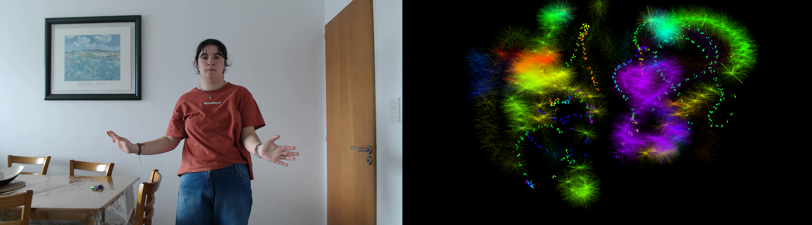

¡Gracias por participar de esta experiencia y formar parte de la obra!
Acá podés encontrar la fotografía de la creación que realizaron en conjunto.



Buscá tu creación y llevate un recuerdo de lo que construyeron entre los tres.
Buscar mi creación
Creado por Julia Gimenez
Festival Artimañas 2026 • La Plata, Buenos Aires